Reads Apple Health onlyData stays on deviceFree · iPhone
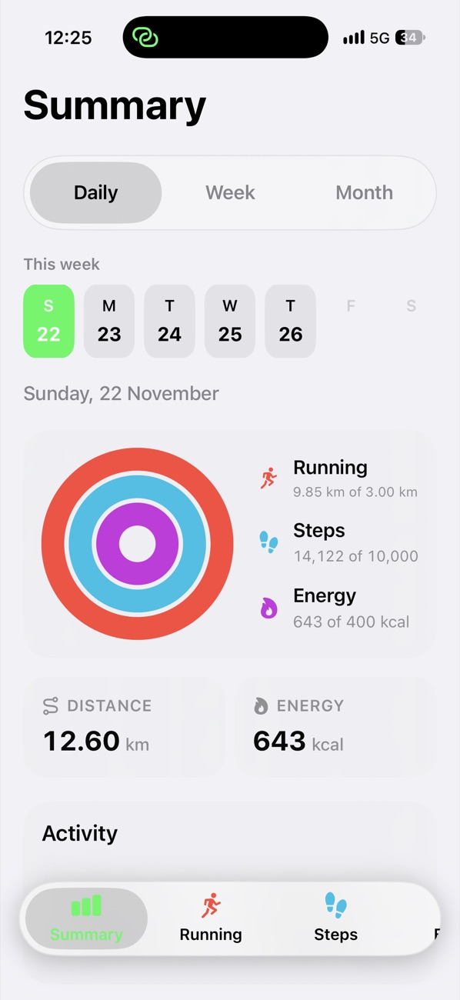
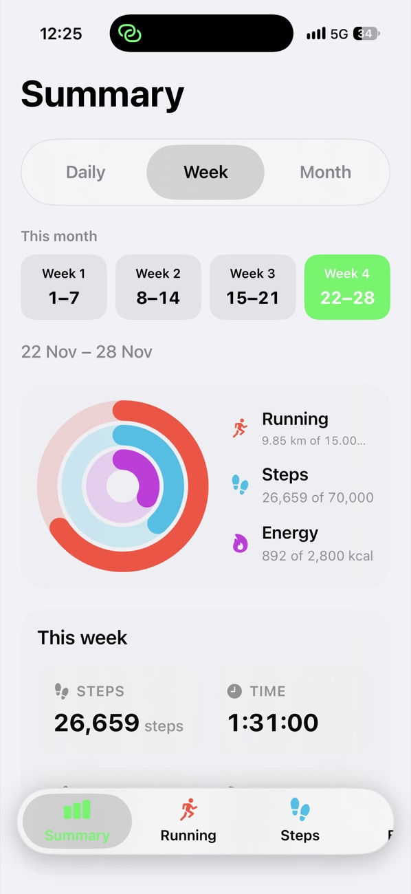
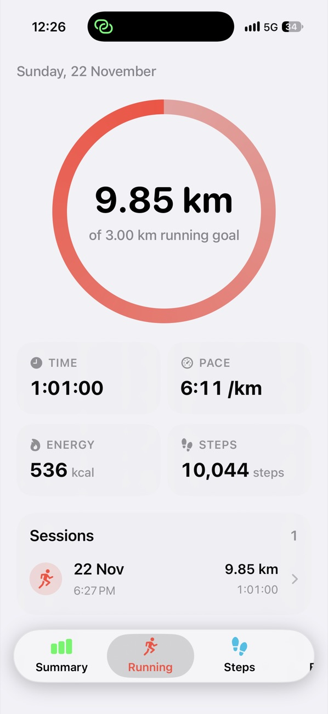
Built for people who already move
RunCheck sorts Health data by speed, lists real sessions (not pacing around the house), and gives each activity its own tab with Daily, Week and Month views.
Overview
Summary
One place for the day, week or month. Rings track progress against the goals for every tab you’ve enabled, and tiles break out walk, jog and run with time, pace, energy, steps and session count.
Jump days and weeks with the pickers — history stays a tap away.
Empty activity kinds stay hidden until you actually have data.
Open a week to see each day side by side when you want the detail.
Running
Running — on by default
Built for real runs: distance against your goal, time, pace, energy and steps, then a sessions list you can open for speed, tempo and a speed graph.
Defaults to runs over 8 km/h lasting at least 5 minutes.
Short breaks under 10 seconds are joined into one session.
Daily, Week and Month each have their own running goal.
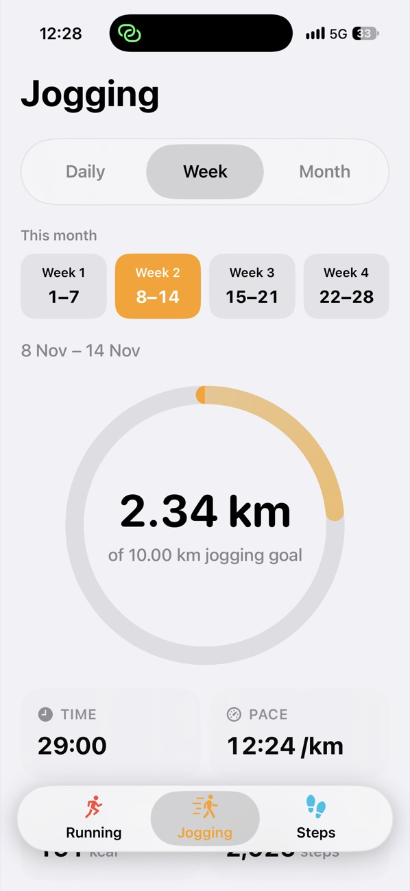
Jogging
Jogging — easy pace, still counted
Turn the Jogging tab on when you want easy runs tracked separately from hard efforts. Same Daily / Week / Month layout, with a goal sized for steady kilometres.
Defaults to 5–8 km/h, at least 5 minutes per session.
Breaks under 30 seconds stay in the same jog.
Week and month pickers make it easy to compare softer weeks.
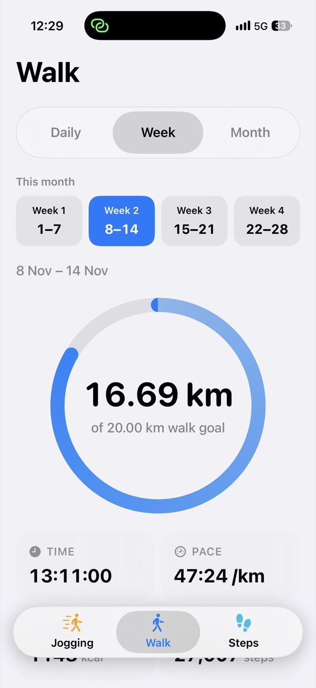
Walk
Walk — purposeful walks, not fidgeting
Walks are filtered so short indoor pacing doesn’t fill the list. You get distance, time, pace, energy and steps for walks that actually count as sessions.
Defaults to under 5 km/h and at least 10 minutes.
Gaps under 2 minutes are joined so a pause at a light doesn’t split the walk.
Week view is useful for long walking weeks against a kilometre goal.
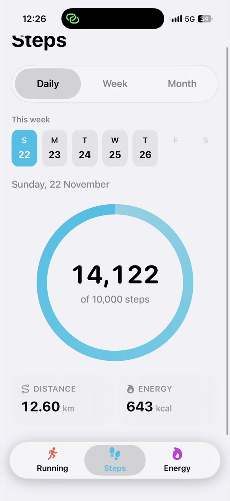
Steps
Steps — the full day total
When you care about the step count itself, the Steps tab shows the ring against your daily, weekly or monthly target, plus distance and energy for that period.
Day strip for the current week; jump to any day with data.
Pairs cleanly with a 10,000-step (or whatever you set) goal.
By-each-day views help spot quiet weekdays vs active ones.
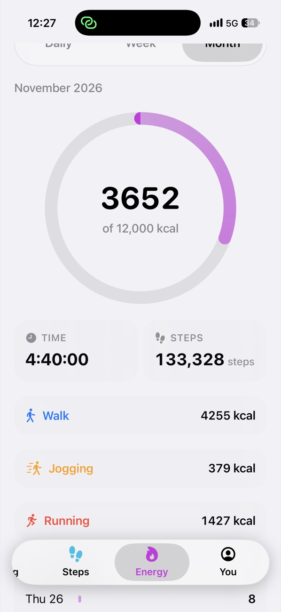
Energy
Energy — kcal with a breakdown
See active energy for the day, week or month against your goal, then how much came from walking, jogging and running — so you know what actually burned the calories.
Uses your body weight from You for estimates when Health needs it.
Activity list colour-matches Walk, Jogging and Running.
Month view is a quick check against a bigger kcal target.
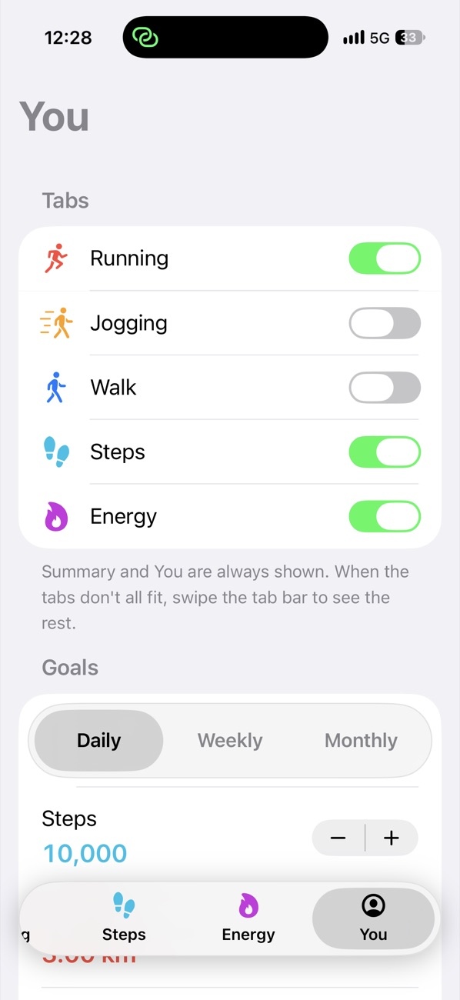
You
You — tabs, goals and units
Summary and You are always there. Everything else is optional: enable Jogging, Walk, Steps or Energy only when you want them in the tab bar.
Tabs — toggle focus tabs; swipe the bar when they don’t all fit.
Goals — daily, weekly and monthly targets per enabled tab.
Units & pace — km or miles, body weight, and where jog vs run starts.
Apple Health — access status and a shortcut into the Health app.
How activity is classified (defaults — editable in You)
Kind
Speed
Minimum session
Breaks joined if shorter than
Walk
under 5 km/h
10 min
2 min
Jog
5 to 8 km/h
5 min
30 s
Run
over 8 km/h
5 min
10 s
More from inside the app
Daily and month Summary layouts, day-by-day history, and the Goals screen.
Summary · Daily
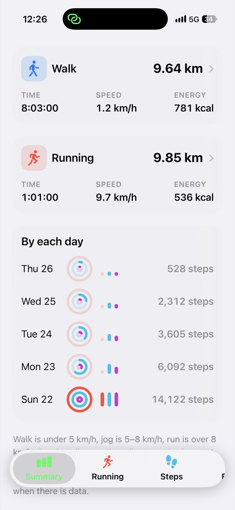
By each day
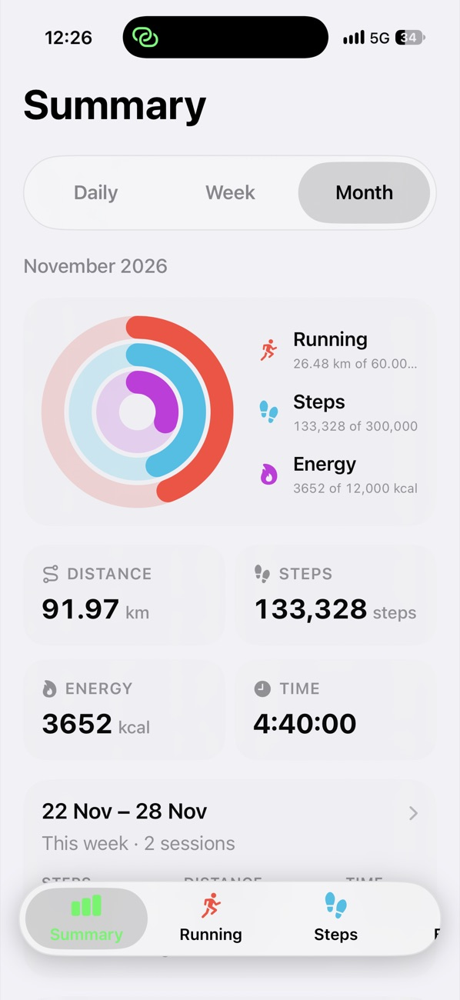
Summary · Month
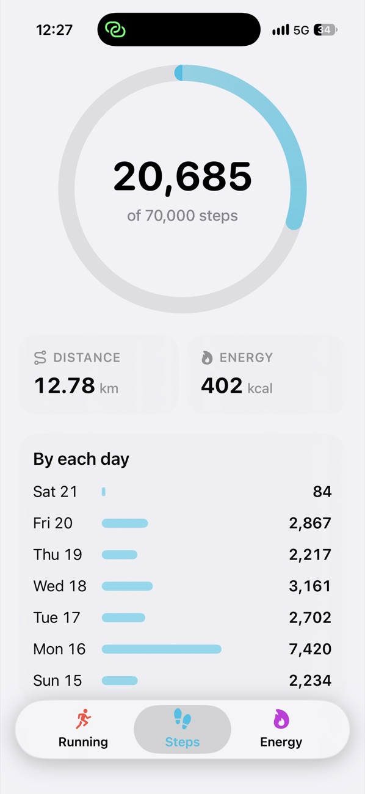
Steps · By day
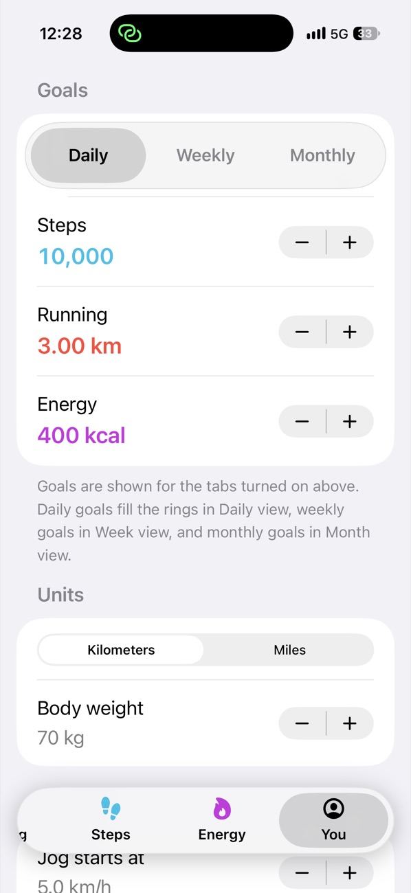
Goals
Private by design
Read-only Apple Health access. No accounts, analytics, ads or third-party SDKs. Health data never leaves your iPhone. App Store privacy label: Data Not Collected.